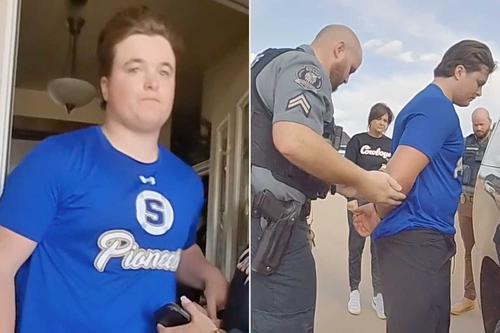
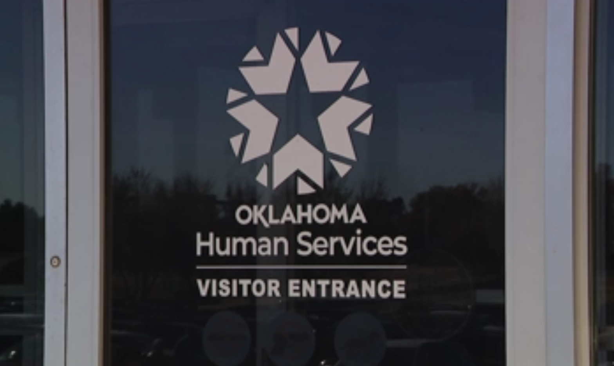
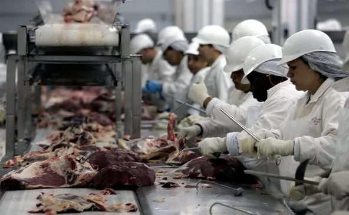

JJ Humphrey’s Key Issues

Jesse Butler Case & Payne County Accountability
The Problem: Abuse and misconduct ignored in Payne County, leaving victims without justice.
The Plan: Push for a thorough grand jury investigation, hold officials accountable, and ensure transparency in all county cases.

Oklahoma Department of Human Services (DHS)
The Problem: Wrongful child removals, due process violations, and failures within DHS, alongside abuse concerns in related systems like OJA.
The Plan: Move CPS under local sheriffs, restore accountability in DHS, and enforce strict oversight across all child welfare systems.

Oklahoma District Attorneys (DAs)
The Problem: Profit-driven probation schemes, blocked exonerations, and power protection.
The Plan: End profit-driven probation, require independent review of wrongful convictions, and hold DAs accountable.
Oklahoma Department of Corrections (DOC)
The Problem: Violence, extortion, mismanagement, and lack of rehabilitation.
The Plan: Build regional state-run facilities with mental health pods for oversight and reduced transport costs.
Broadband Expansion & Infrastructure
The Problem: Billions wasted on contracts without expanding rural access.
The Plan: Deliver affordable universal broadband using cost-effective solutions.

Big AG Monopolies
The Problem: A small number of large agricultural corporations are unethically, and sometimes illegally manipulating the martket , squeezing out family farmers and driving up costs.
The Plan: Break up monopoly control, enforce fair competition, and put Oklahoma farmers and ranchers first again.